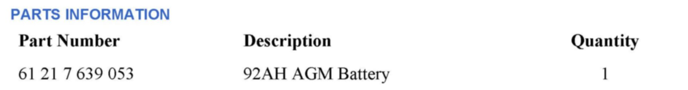

Electrical - 90AH Absorbed Glass Matt Battery Replacement
SI B61 22 12General Electrical Systems
July 2012
Technical Service
SUBJECT
Replacement Procedure for 90AH Absorbed Glass Matt Battery
MODEL
All
SITUATION
Since December 2011, the 90AH Absorbed Glass Matt (AGM) battery is no longer available as a replacement part.
The replacement battery is now a 92AH AGM battery.
ISTA/P (Integrated Service Technical Application, Programming) does not contain a conversion for the 92AH AGM battery.
INFORMATION
The 92AH AGM battery is now locally sourced through Exide.
PROCEDURE
1. Install the new 92AH AGM battery as per ISTA Repair Instructions "61 20."
2. Perform the "Register battery change" test plan using ISTA. The test plan can be accessed via the following path: "Activities / Service function / 03 Body / power supply / Battery."
Note:
A vehicle test is not required in order to perform this test plan.
3. Once the test plan is started, select the option "1 Enter battery replacement: same capacity." Complete the plan to the end.
4. Clear all faults and reset the date and time.
5. The battery replacement is finished. A conversion using ISTA/P is not needed.

PARTS INFORMATION
WARRANTY INFORMATION
Not applicable.